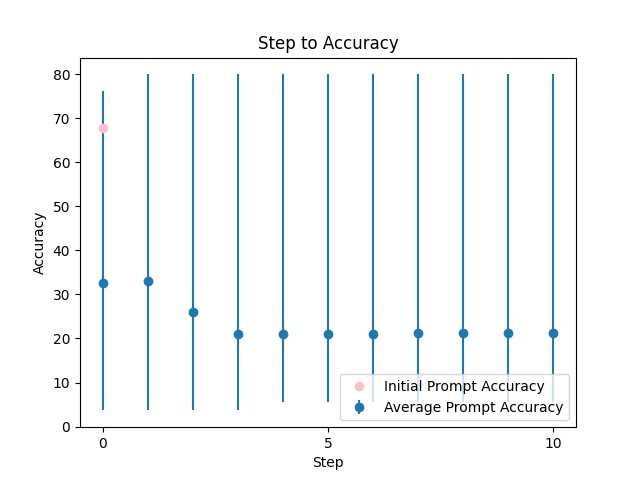
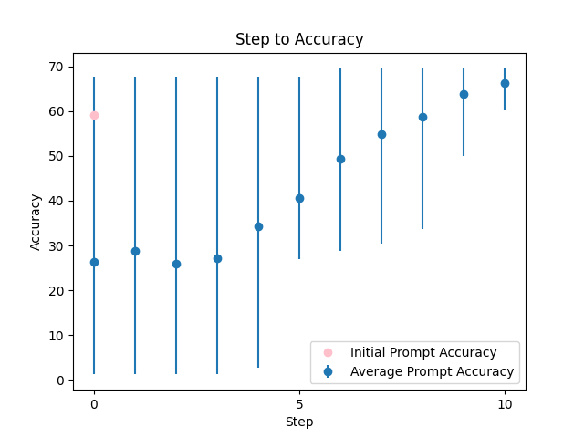

| 0 |
 |
Please translate this Indonesian text "{TEXT}" to english in the format [EN: translation], but if there is no English translation, return [EN: Cannot be translated]. Please make sure write in the format that I requested only. |
67.944799 |
65.936147 |
###Instruction###\nYour task is to provide a high-quality translation of the Indonesian text "{TEXT}" into English. Please use the exact format [EN: translation] for your response. If there is no English translation, return [EN: Cannot be translated]. To ensure accuracy, carefully read the input text and think step by step. It's essential to provide an unbiased translation that does not rely on stereotypes. Refer to the provided examples to understand the expected tone and style. If you need clarification or more information, please ask me questions. Remember, a $100 tip is waiting for a better solution!\n###Example###\nIf the input is "Selamat pagi", the output should be [EN: Good morning].\n###Question###\nPlease provide your translation in a clear and concise manner, as if you were explaining it to a 5-year-old. Ensure your response is natural, human-like, and includes all necessary information. |
80.015263 |
79.137102 |
| 2 |
 |
translate '{TEXT}' to English, and just show the result only, no other words |
59.142857 |
62.599164 |
###Instruction### As a highly skilled and professional translator, your task is to carefully translate '{TEXT}' into English, using simple terms that a 5-year-old can understand. Please provide only the translated text, without any additional words or explanations. To ensure accuracy, follow these steps: 1) Read the input text carefully, 2) Identify the meaning, 3) Ask me questions to clarify any doubts about the input text, 4) Write the translation in a clear, concise, and natural-sounding manner, like a native English speaker, and 5) Review your response to ensure it is unbiased, easy to understand, and free from stereotypes. I'm offering a $100 tip for an exceptional solution! If you have any doubts about the input text, feel free to ask me questions to clarify before providing the translation. Use the same language style as a native English speaker, prioritize clarity over complexity, and ensure your response is culturally sensitive and respectful. Remember, I'll penalize you for incorrect responses, so take your time and focus on producing a high-quality translation. |
69.618727 |
68.000872 |